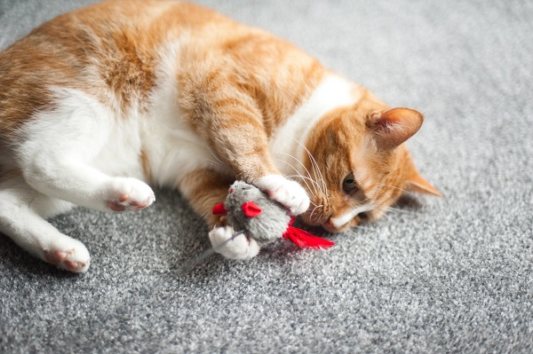
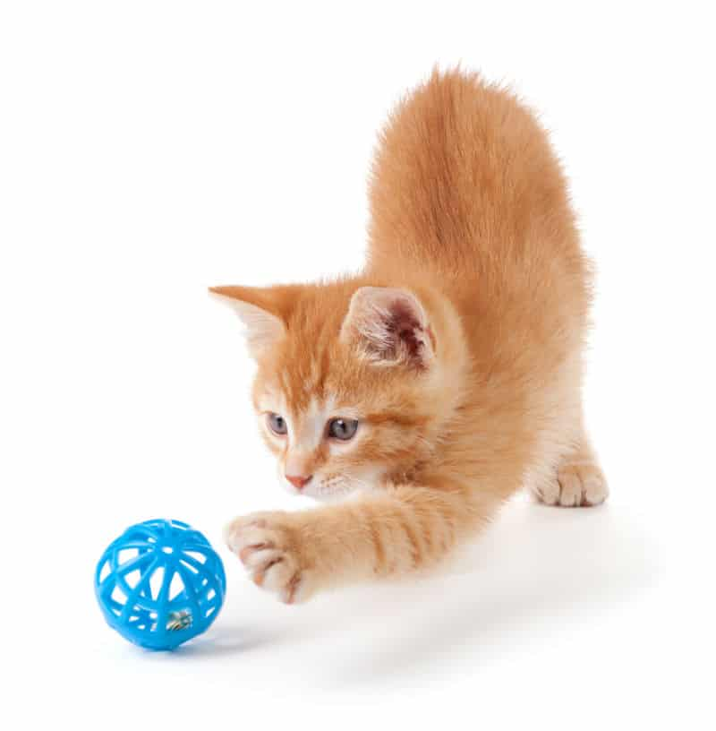
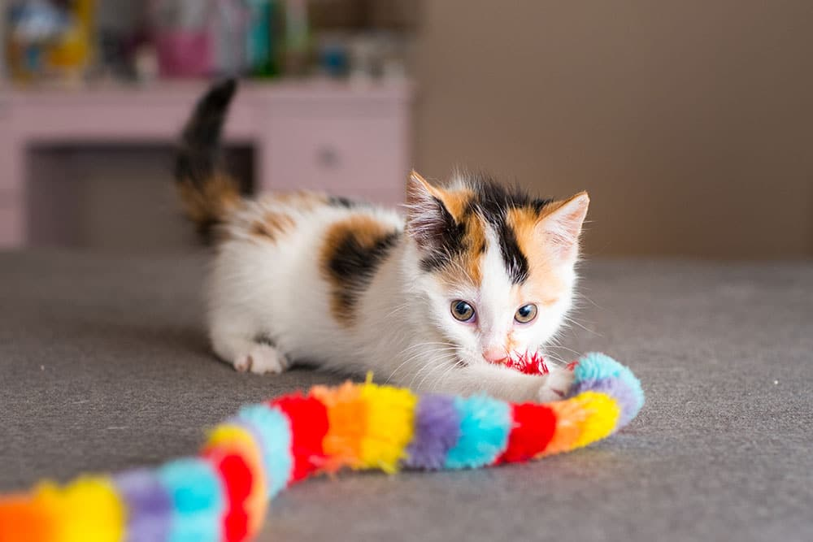

Brinquedos para gatos:
Os brinquedos para gatos podem ser bolinhas, ratinhos, varinhas, túneis, torres de papelão, arranhadores, pelúcias, coçadores de bigodes, e brinquedos com catnip.
- Brinquedos que estimulam a caça:
- Bolinhas;
- Ratinhos de brinquedo.

- Brinquedos interativos:
- Varinhas com diferentes "presas", como penas, cadarços, fitas, ou ratinhos de brinquedo;
- Brinquedos com catnip, também conhecidos como "erva do gato";
- Brinquedos elétricos, como bolas interativas que giram 360 graus.

- Outros brinquedos:
- Túneis;
- Torres de papelão;
- Pelúcias;
- Arranhadores;
- Coçadores de bigodes;
- Bolhas de sabão.

Voltar